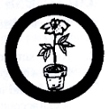

Botany
- Make five field trips of at least two hours each to observe wild plant life. Keep a record based on field notes of varieties of flowers found - with date, place, nature of locality (swamp, roadside, woods, meadow, etc.) and other observations such as seeds, seed pods, leaf arrangements, insect attraction. (Record will be interesting if photographs or sketches are included).
- Identify from living specimens at least fifty (50) plant specimens.
- Identify in three or more specimens, all parts of a perfect and complete flower. Explain how plants are pollenized, and how ferns differ from flowering plants.
- Identify specimens of at least ten families of flowering plants (other than trees); or submit properly labeled specimens of such families. This may be included as part of requirement #8b.
- Know what plants are rare in your vicinity, and what is being done or should be done to protect them.
- Explain how plants use light, heat, water, oxygen, and carbon dioxide; and how they manufacture their own food.
- Submit or identify in the field one specimen each of fungi, algae, lichen, and moss.
- Carry out one of the following projects:
- Submit a seed collection, properly labeled, or at least 20 different kinds of seeds gathered by yourself. Germinate at least five species. Find out all you can about different varieties of seeds and how they are scattered.
- Submit specimens of at least thirty (30) species of flowering plants. Include leaf, stem, flower, and root (if specimens are not rare). Mount neatly, label with both common and scientific names, date and place found, and nature of locality.
- Make a study of plant life in an area of not less than two square meters for at least two months. Keep a record of species found, type of locality, insect attraction, seeds, etc.
- Raise a wild flower or fern garden, including at least five different species of plants. Know the following:
- Both common and scientific names of each
- Proper methods of transplanting and care
|